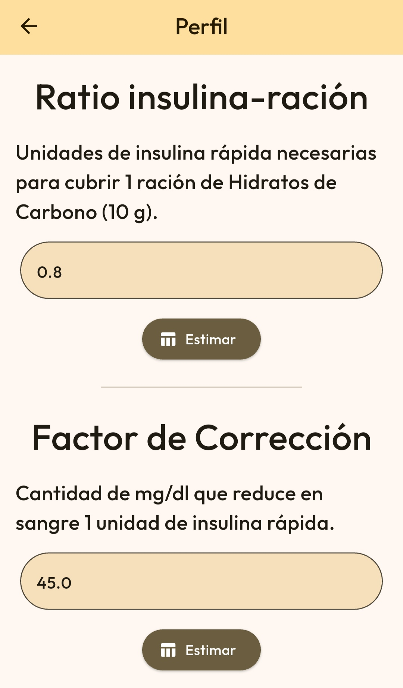
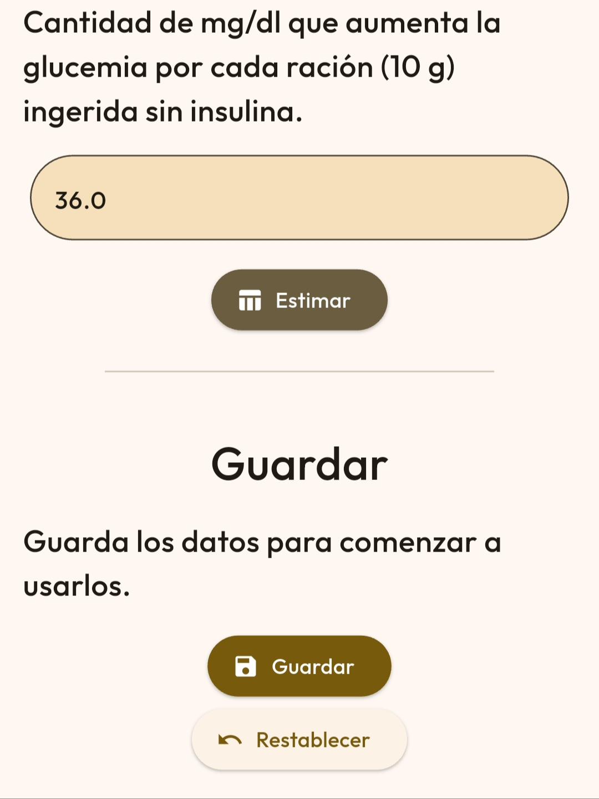
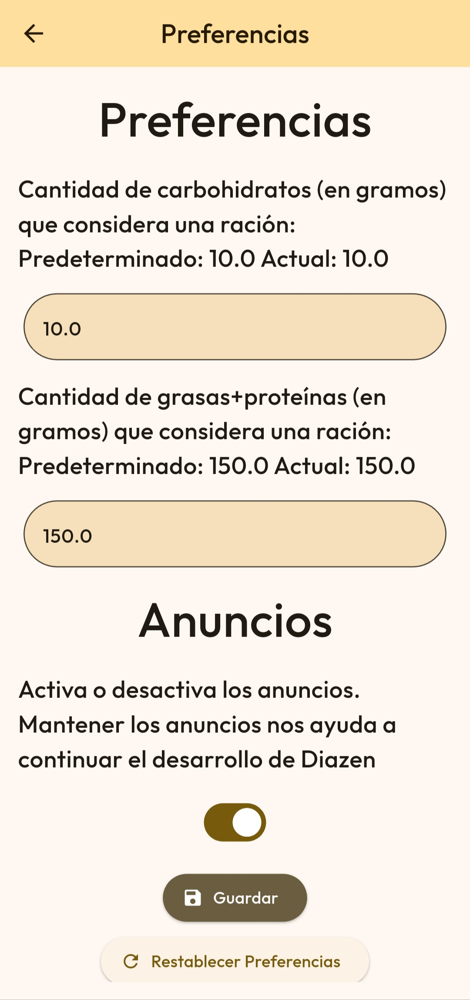

Configurar tu perfil te permite acceder a herramientas más avanzadas. Ve a la pantalla de Ajustes. Abre el apartado de "Perfil".

Verás una página con varias divisiones. Completa los valores pedidos según las instrucciones. Si no tienes a tu disposición esos valores, puedes estimarlos pulsando el botón "Estimar" y seguir dichas indicaciones.
Pulsa "Guardar" para guardar tu perfil o pulsa "Restablecer" para devolver los valores a su valor por defecto.Puedes establecer nuevos valores para el funcionamiento general de la aplicación en el apartado de Preferencias, en ajustes.

Asigna tus nuevos valores según las indicaciones y pulsa "Guardar" para guardar los datos.